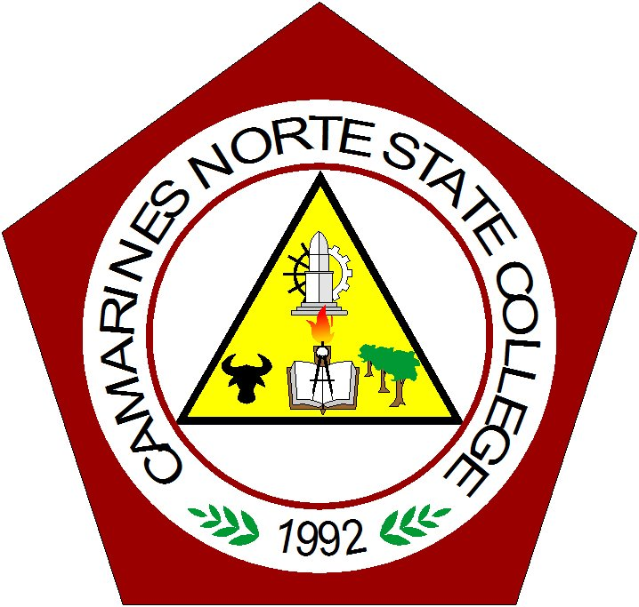
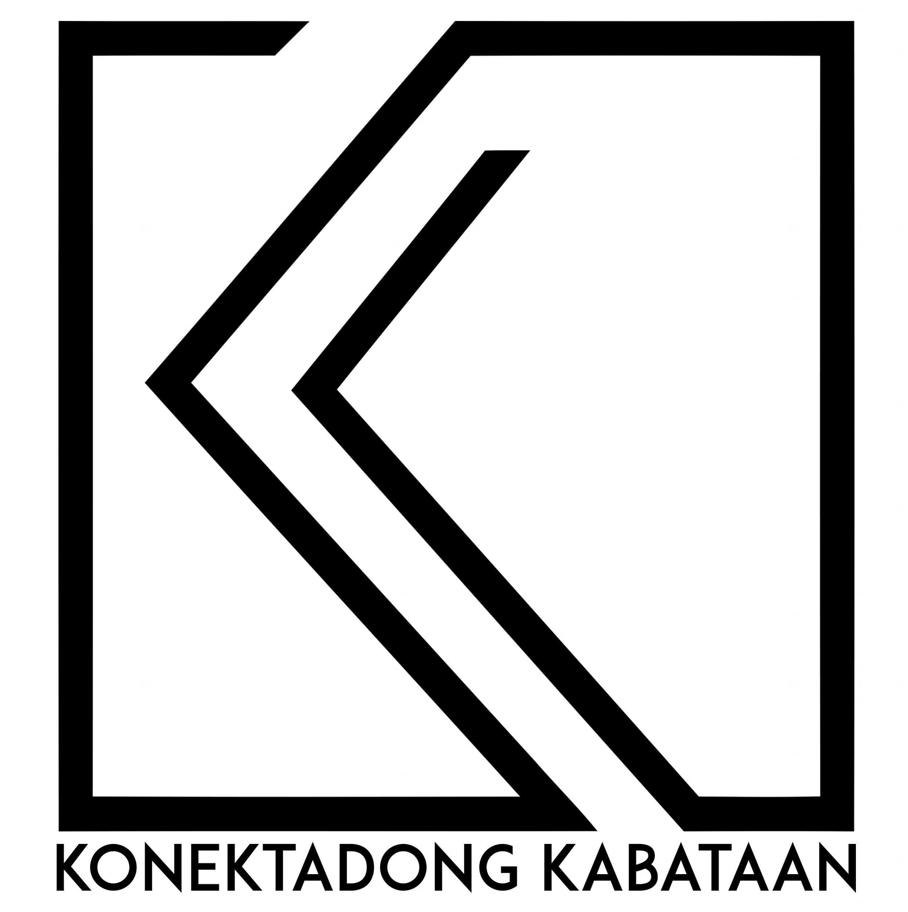

You can call me "Katrinca", "Kat", or "Katkat" for short. I'm a passionate and creative individual who loves to explore the intersection of technology and art.
As a 2nd Year BSIT Student, I find the world of app and website development both fascinating and amusing. My goal is to become a Web Designer and Animator who creates elegant solutions and exceptional user experiences.
As a Born Again Christian, I am driven by faith, firmly believing that with God, anything is possible.


Community engagement and support
Nourishing communities in need
Supporting young individuals
Let's discuss your project and create something amazing that exceeds expectations.
Get in Touch